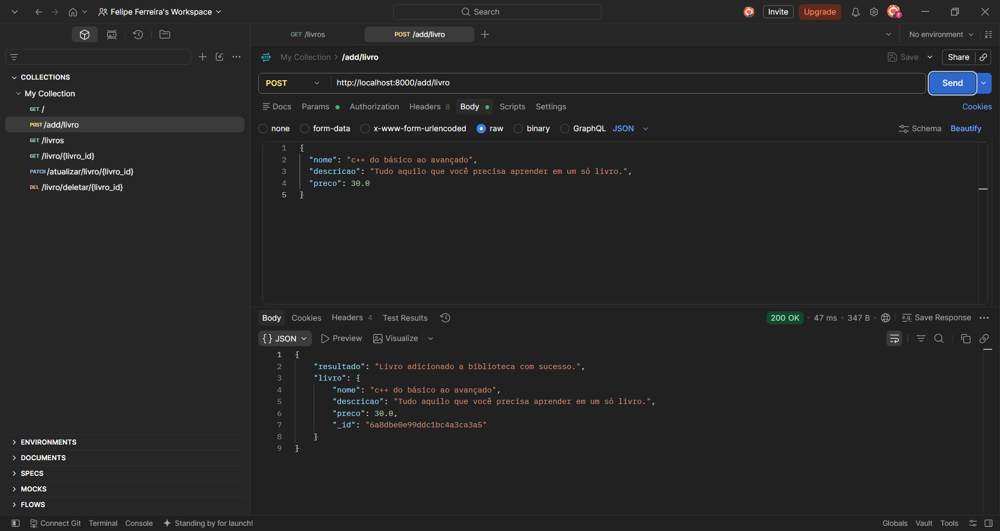
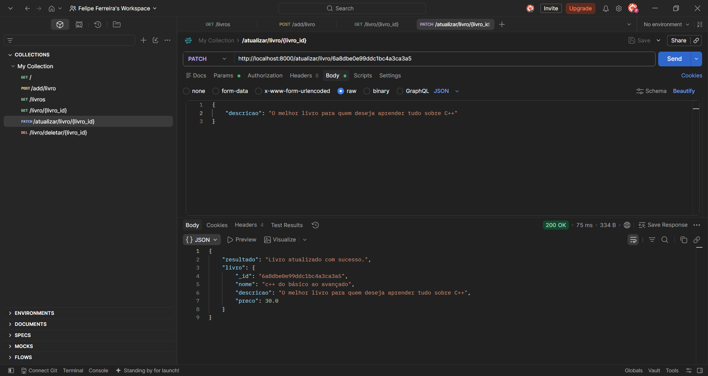
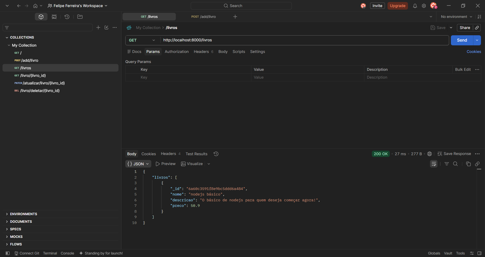
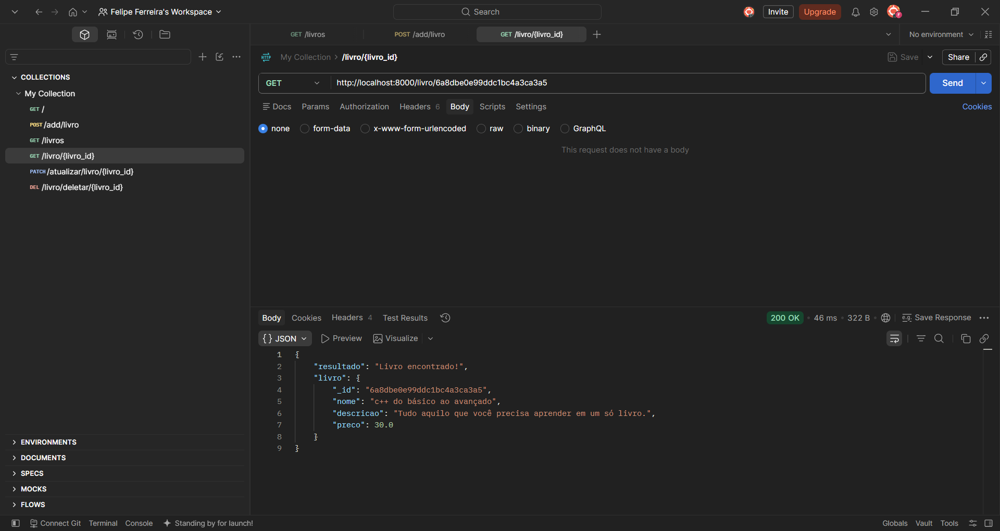
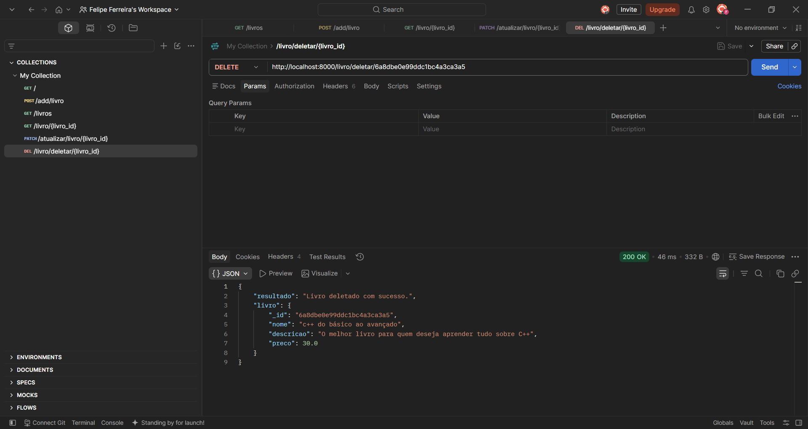

Ferramentas utilizadas para a criação dessa api: Python, FastAPI, MongoDB Atlas e Mongoose. Ela permite adicionar, buscar, atualizar e excluir livros do banco de dados. FastAPi possibilitou a criação da API em si, juntamente com Python. Já o Mongoose foi utilizado para realizar a conexão com o MongoDB Atlas.




